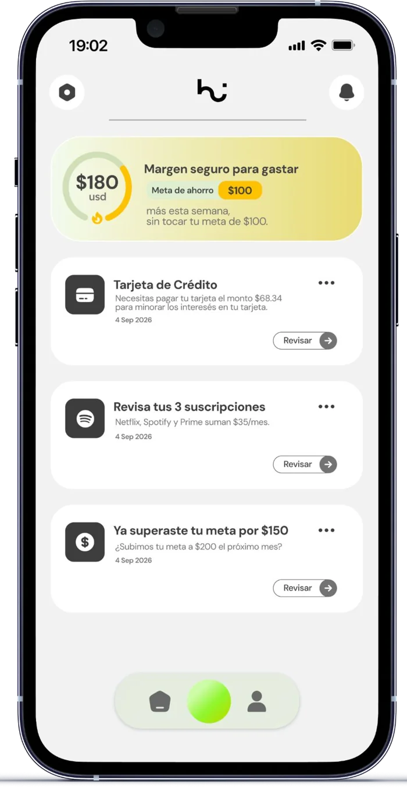
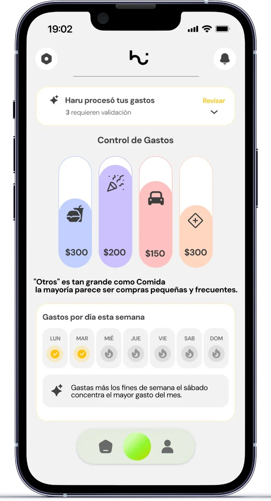
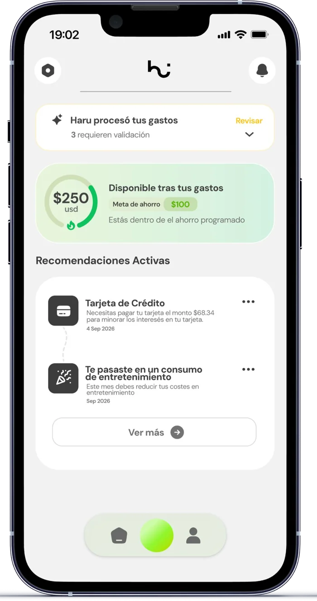
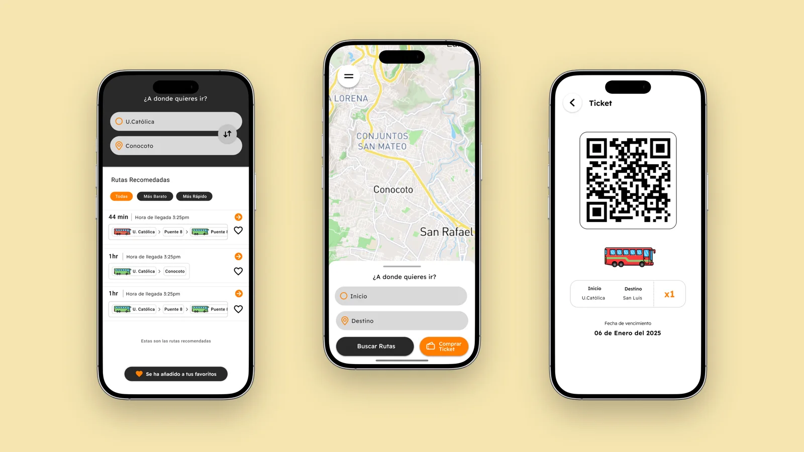

Haru · Fintech · UX challenge
A financial coach,
not a bank.
A UX challenge: a personal finance app that reads the money for the user, so they stop doing the work.
- Type
- UX design challenge
- Platform
- Mobile app
- Role
- UX / UI design
- Focus
- Clarity, trust
01The problem
What users told us
01
Where did it go?
They can’t see where their money goes.
02
No manual tagging
Nobody wants to categorize by hand.
03
Numbers, no insight
The app shows data but explains nothing.
The problem isn’t missing features. It’s the effort asked of the user.
02Approach
Hypothesis and flow
“If Haru interprets the money for the user, the user no longer has to.”
Open HaruHome: how am I in 5 seconds?Insights: why is this happening?Plan: what do I do now?Back to Home
Lateral thinking
Connecting accounts is plumbing
It’s a data mechanism, not a screen.
Lateral thinking
Interpretation is the product
Recording spending is a commodity.
Lateral thinking
Reminders earn trust
Avoiding late fees is concrete value.
Assumption of the exercise: read-only access to accounts and cards.
03Key screens
3 screens, 3 questions

Safe margin to spend and the alerts that need attention.

Categories, weekday pattern and a plain-language note.

Money available after expenses and concrete recommendations.
04UI
Calm, not anxious
Mixed radii
Capsules for actions, straighter cards
Same components
Home, Insights, Plan share one system
Real charts
Never loose numbers
Trust by absence
No forced security seals
Design challenge and concept, not a launched product. No usage metrics.
Next project
GoNow
Public transit app for Quito, built from user interviews.
